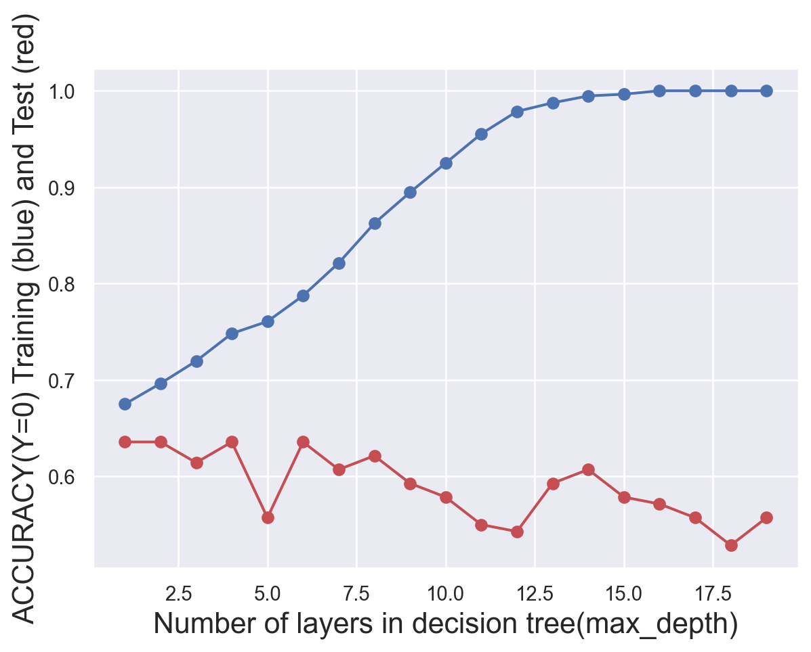
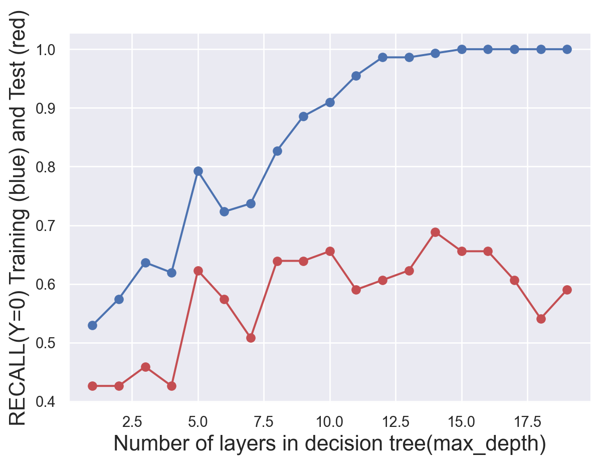

In this tab, a classification method called Decision Tree is used. This method continuouslly asks “whether or not questions” to the input so that it can gradually divides it into different parts.
(Example of the process of decision tree)reference
But how to decide what to ask? The trick here is to use mathematical formulas to quantify one of the following metrics to find the question.
The extent to which we gain new information from new answers (by calculating entropy)
The probability which we incorrectly classify the sample (by calculating gini index)
By using this method, we can easily find how important an attribute is, and understand what makes our research target so different.
Now we are going to apply this method to our data to achieve one of our goals:
Distinguish users who are more likely to be influenced by rumor with other users.
Class Distribution
Code
# import librariesimport numpy as npimport pandas as pdimport matplotlib.pyplot as pltimport seaborn as snsfrom sklearn import treefrom sklearn.model_selection import train_test_splitfrom sklearn.metrics import accuracy_scorefrom sklearn.metrics import precision_recall_fscore_supportfrom sklearn.metrics import precision_scorefrom sklearn.metrics import recall_scorefrom sklearn.metrics import confusion_matrix#load the datadf=pd.read_csv("../../data/01-modified-data/cleaned_followers.csv")sns.set_theme()#plot the distributionplt.hist(df.label.astype("string"))plt.title("The distribution of the class",fontsize=18)plt.xlabel("Class",fontsize=16)plt.ylabel("Counts",fontsize=16)#show the datadf.head()
user_id
screen_name
followers_count
friends_count
listed_count
favourites_count
tweet_num
protected
verfied
label
0
2198516225
_Banzi_
27
199
0
601
122
0
0
1
1
1504258025804210176
DelorbeTori
81
2771
0
0
6
0
0
1
2
1581474148571877377
omkarVyawahare2
0
56
0
24
0
0
0
1
3
2967681610
L1BERTE_S
50
68
1
8735
2238
0
0
1
4
1400890434
mistamomo_
356
1104
19
18347
20160
0
0
1
The count of two classes are the same, 350 for each. This is dsigned when gathering the data(“details of followers”). With this kind of data, we can avoid problems brought from imbalanced data sets.
Baseline Model for Comparsion
Code
#define a baseline model which random assign labelsdef random_classifier(y_data): ypred=[] max_label=np.max(y_data);#print(max_label)for i inrange(0,len(y_data)): ypred.append(int(np.floor((max_label+1)*np.random.uniform(0,1))))print("-----RANDOM CLASSIFIER-----")print("accuracy",accuracy_score(y_data, ypred))print("percision, recall, fscore,",precision_recall_fscore_support(y_data,ypred))random_classifier(df.label)
What a baseline model here did is guess the class. And we can see that every metric is around 50%. So if a model perform than this baseline, than we can say it do make some sense.
Feature Selection
Code
# id reflect the time account exits,we normalized it df["user_id"]=(df.user_id-df.user_id.mean())/df.user_id.std() #drop the feature we won't consider aboutdf.drop(columns=["screen_name"],axis=1,inplace=True)#X=df.drop(columns=["label"],axis=1)y=df["label"]x_train,x_test,y_train,y_test=train_test_split(X,y,test_size=0.2)
Feature
Meaning
user_id
the id of users
followers_count
the number of followers this account currently has
friends_count
the number of users this account is following
listed_count
the number of public lists that this user is a member of
favourites_count
the number of Tweets this user has liked in the account’s lifetime
tweet_num
the number of Tweets (including retweets) issued by the user
protected
whether user has chosen to protect their Tweets
verified
whether user has a verified account
(The names and meanings of features)
8 features was selected to train the model. These features are all attributes that are allowed to get and reflect the character of accounts. With these attributes, we have the biggest possibility to find the differences. Note that “user_id” is also selected because it reflect how long an account was created. The bigger an user id is, the newer the account is.
Model tuning
Code
# try different numbers of layers to find the best onetest_results=[]train_results=[]for num_layer inrange(1,20): model = tree.DecisionTreeClassifier(max_depth=num_layer) model = model.fit(x_train,y_train) yp_train=model.predict(x_train) yp_test=model.predict(x_test)# print(y_pred.shape) test_results.append([num_layer,accuracy_score(y_test, yp_test),recall_score(y_test, yp_test,pos_label=0),recall_score(y_test, yp_test,pos_label=1)]) train_results.append([num_layer,accuracy_score(y_train, yp_train),recall_score(y_train, yp_train,pos_label=0),recall_score(y_train, yp_train,pos_label=1)])test_results=np.array(test_results)train_results=np.array(train_results)#generate plots of the performance of different layers def metric_plot(ylabel,layer,yptrain,yptest): fig=plt.figure() plt.plot(layer,yptrain,'o-',color="b") plt.plot(layer,yptest,'o-',color="r") plt.ylabel(ylabel+" Training (blue) and Test (red)",fontsize=16) plt.xlabel("Number of layers in decision tree(max_depth)",fontsize=16)metric_plot("ACCURACY(Y=0)",test_results[:,0],train_results[:,1],test_results[:,1])metric_plot("RECALL(Y=0)",test_results[:,0],train_results[:,2],test_results[:,2])metric_plot("RECALL(Y=1)",test_results[:,0],train_results[:,3],test_results[:,3])


To find the most suitable number of layers, several plots was produced. We finally find that we should set max_depth as 3.
Final Results
Code
#fit the tree model with the best layermodel = tree.DecisionTreeClassifier(max_depth=3)model = model.fit(x_train,y_train)yp_train=model.predict(x_train)yp_test=model.predict(x_test)#write a function to visualize the confusion matrixdef confusion_plot(y_data,y_pred):print("ACCURACY: "+str(accuracy_score(y_data,y_pred))+"\n"+"NEGATIVE RECALL (Y=0): "+str(recall_score(y_data,y_pred,pos_label=0))+"\n"+"NEGATIVE PRECISION (Y=0): "+str(precision_score(y_data,y_pred,pos_label=0))+"\n"+"POSITIVE RECALL (Y=1): "+str(recall_score(y_data,y_pred,pos_label=1))+"\n"+"POSITIVE PRECISION (Y=1): "+str(precision_score(y_data,y_pred,pos_label=1))+"\n" ) cf=confusion_matrix(y_data, y_pred)# customize the anno group_names = ["True Neg","False Pos","False Neg","True Pos"] group_counts = ["{0:0.0f}".format(value) for value in cf.flatten()] group_percentages = ["{0:.2%}".format(value) for value in cf.flatten()/np.sum(cf)] labels = [f"{v1}\n{v2}\n{v3}"for v1, v2, v3 inzip(group_names,group_counts,group_percentages)] labels = np.asarray(labels).reshape(2,2)#plot the heatmap fig=sns.heatmap(cf, annot=labels, fmt="", cmap='Blues') plt.title("Confusion Matrix of Texts - Decision Tree",fontsize=18) fig.set_xticklabels(["Easily affected","Not easily affected"],fontsize=13) fig.set_yticklabels(["Easily affected","Not easily affected"],fontsize=13) fig.set_xlabel("Predicted Labels",fontsize=14) fig.set_ylabel("True Labels",fontsize=14) plt.show()confusion_plot(y_test,yp_test)#write a function to visualize the treedef plot_tree(model,X,Y): fig = plt.figure(figsize=(10,8)) tree_vis= tree.plot_tree(model, feature_names=X.columns,class_names=Y.name,filled=True)plot_tree(model,x_test,y_test)
With 3 layers, the leaf node seems quite reasonable.The model turns out to be quite trustable both on negative data. And favourite_count seems to be a remarkable metrics when grouping users.
Conclusion
The model is not bad. It can correctly distinguish most samples and the accuracy is about 70%. However, since our target is to find users easily be affected by rumors. A false positive is more acceptable than a false negative, which means it is more acceptable to warn a person not easily be affected than fail to notify a person who may trust a rumor and pass it along! So we can consider to apply this model.
Decision tree is unstable, so we can still use bagging(random forest), boosting(xgboost, GDBT, lightBGM, etc) to fit the data in the future.